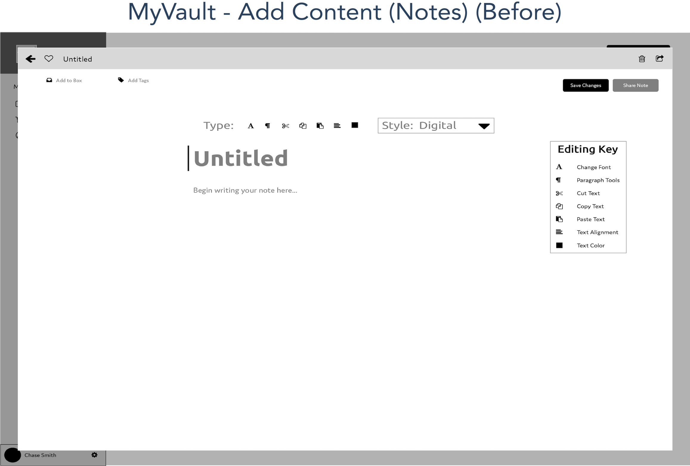

MyVault is a unique form of online file sharing that allows you to share your favorite notes, images, and links with the world.
Take a LookSummary
According to Business Insider, in the current era, about 29% of the world's population online now rely on online storage to keep their most important files safe. With so many web-based sources available to choose, all with different options, finding the right source can be like a needle in a haystack.
With MyVault, you now have the option of keeping your most important files stored easier, all while utilizing the most important tools you'll need for sharing your favorite notes, links and images.
My Role
- Strategy and Brainstorming
- Full-scale Wireframe Design
- Responsive Prototyping and Testing
- User-Testing and Feedback Collection
Tools Utilized
Background Research
As I began to develop MyVault, I wanted to create a layout that you can use to navigate through files in a more minimalistic way, free of clutter of added tabs and features not needed. All of this, while providing an aesthetic that adds a sense of trust and confidence in the user leaving their files stored in their "Vault."
Keeping this in mind, I did some research by means of online surveys and word-of-mouth interviews with individuals constantly online. After gathering their personal statements, many mentioned they would spend hours upon hours daily doing file downloading, or even using note-based apps. Some had even mentioned preferring to edit images and even bookmark links, without having to rely on social-media based sources that could compromise their information. It then occurred to me that this was an app that needed to be adaptable to not only storing files, but also enjoying more daily tasks as well, all in one convenient, yet streamlined layout.
Coupled with this, I had contemplated who would be accessing this source daily. Many of the individuals who I spoke with, ranged in ages between 24 and 52, which made it apparent this is going to be an app used by nearly anyone on the web. And because of this, a more streamlined layout would be necessary to insure notes, images, and links could be organized easier.
Problems
During the initial brainstorming of MyVault, some of the biggest challenges that I sought to address, were actually challenges even I could relate to personally in one way or another. This included, but was not limited to:
- Creating a more cleaner page without the need for as many tabs and actions in order to access files
- Instituting a more streamlined process for adding new files and making changes to a user’s account settings
- Giving the ability to access files by individual types for better organization
- Utilizing more balanced colors, which was needed for the main homepage and dashboard/file pages
Solutions
To help make MyVault a lot more unique and easier-to-navigate in comparison to other storage sources, I decided to implement two key principles to insure each page included both a unique look, that was also simplified more easily.
To start, I chose to arrange my page so that so that anytime an individual wants to access specific types of items, they should have the option for doing so without having to click to multiple pages. Thus, I organized each individual file type as a clickable link from the main dashboard, which will only show that type of file needed, without displaying all items.
I also thought it would work best to minimize the amount of tools inside each page users have for adding new files. For files like Notes, you have the most important editing tools available like you would in a normal word processor, but the page is solely focused on just your work at hand without superfluous tools being shown. Images and Links have the same added simplicity provided, with only speciifc size adjustment and cropping tools available for Images and the ability to simply add a description for any Links saved. The key in this instance, is to reduce both clutter on the page, as well as overall time needed for adding files.
User Personas
To help narrow in on the most important features to include for MyVault's design, I interviewed three different users who each use online storage for different purposes. Bruce handles larger amounts of professional-grade photos that he doesn't always like to edit directly on his hard drive keeps photos he takes stored. Hunter is an avid music listener while working at his lawfirm, but prefers using more obscure music sites that he doesn't like to go searching for all the time. And Maria enjoys sharing photos and video links of her favorite soccer matches with friends, and wants a central resource to do so.
View User PersonasWireframes
Logo Design
When it came time to deciding on a logo, I had a few ideas in mind that could incorporate the image of a vault in a big way.
This started off small by using a standard look of a personal vault with rounded handles, but with a sturdy look; this helped determine the more streamlined look I was seeking.
I then tried creating a more heavy-duty vault design like those of a bank, but the rounded edges proved too busy of a look all around the door.
With both size and detail in mind, I eventually found the design I wanted to use for the vault that combined both a more personal-looking vault, but with a more ergonomic look that would not include any heavy gradient usage or metallic accents when using colors.
Color Palette/Branding
With the logo look now in mind, the time came to then focus on both the typeface and color palette I wanted to use for the pages themselves. Multiple font styles were considered, but ultimately, I wanted to use a font with a streamlined and sans-serif style to match the streamlined look of the logo.
To give that same feel, I chose Ubuntu as the main font for the logo's wording and headers for each page on the site. It's more jagged edges gave a more on-point feeling that works well with it's more precise curvature. This was complimented well with the font known as Domus, which was utilized for the smaller text on each page including subheaders and descriptions.
Ultimately, I wanted to make each page more calmer in tone and provide the user with a sense of greater peace knowing their files and documents they create are being securely stored. Becuase of this, I chose a few shades of blue including darker tones for the homepage and main account pages, while leaving a more gold tone for tabs needed for accessing account settings and even signing up for an account.
Final Design
Comparison
Looking back on the journey taken from the original wireframes to their final look, I was glad to see how many of the strategies formulated in the beginning proved quite successful after the final prototype test. After showcasing the prototype in it's colored form, users were enjoying having each page provide the more calmer and less intimidating atmosphere without a fear of having to click through as many links. In the end, the vision for MyVault stayed true to it's roots.
Testing and Feedback
Once ready, I implemented my prototype to InVision to conduct full usability tests with a total of 20 individuals. For each test, an individual would be asked to navigate through MyVault's main main home page, and create a new account to access MyVault's dashboard page.
After analyzing final results from each of the 20 tests conducted, I noticed more favorable responses made to the final design I created compared to previous tests from the low-fidelity wireframes. Many individuals noted similar comments during their tests, in that they preferred the removal of tools commonly thought of as superfluous when adding items like notes or photos.
Of the 20 individuals tested, 17 out of 20 (86%) preferred having the added convenience of files being organized by type, and having that option available from the sidebar directly. This was further bolstered, by the visual appeal of the page, with 80% their appreciation for the simliar look and feel of a mobile-app layout, when using tools like adding new files or accessing account details.
“It's like having a larger version of the mobile version. If you have that option to add files in the corner, it’s pretty quick to use.”
- Hunter Thompson (Portland, OR)
Conclusion
Reflecting back on all that I have learned after putting together MyVault, it was amazing to see just how much great feedback I had received after implementing these design changes from the first version that I brainstormed.
In one respect, having these more delicate and softer color tones works to help put users at ease and reduces the fear of being too overwhelmed with the look and features of the page.
As mentioned before, with so many people online nowadays, there are definitely a lot of choices out there for apps capable of taking notes and sharing ideas. But with MyVault's tools and capabilities, anyone can enjoy daily activities like these with ease of mind.